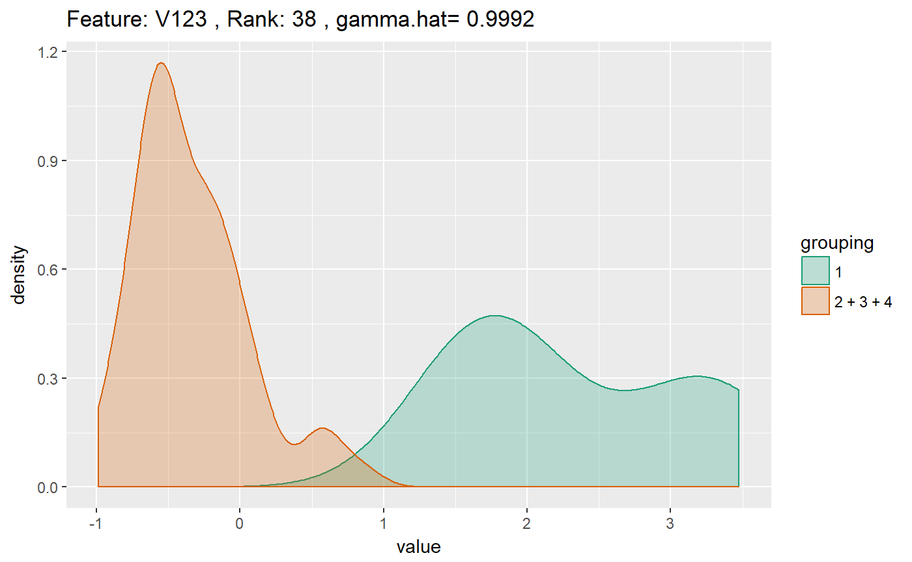
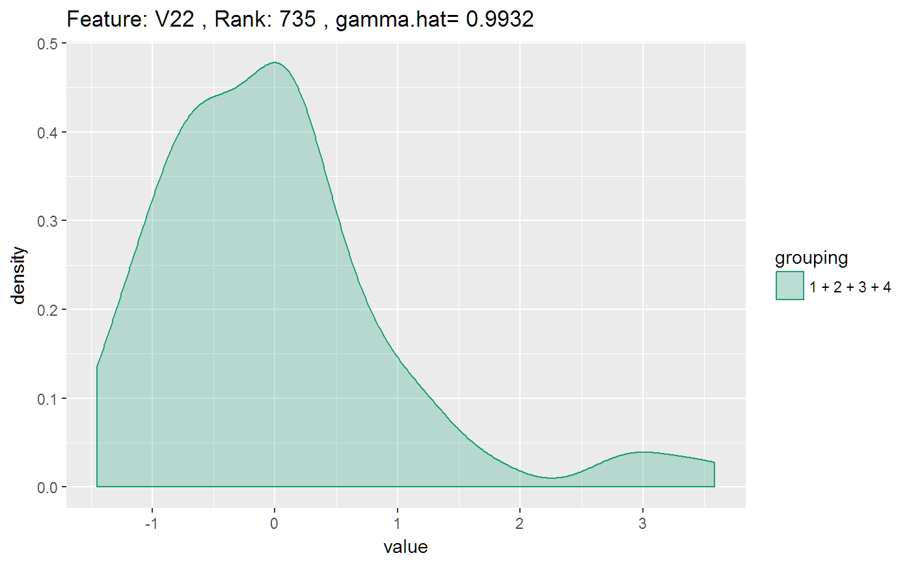
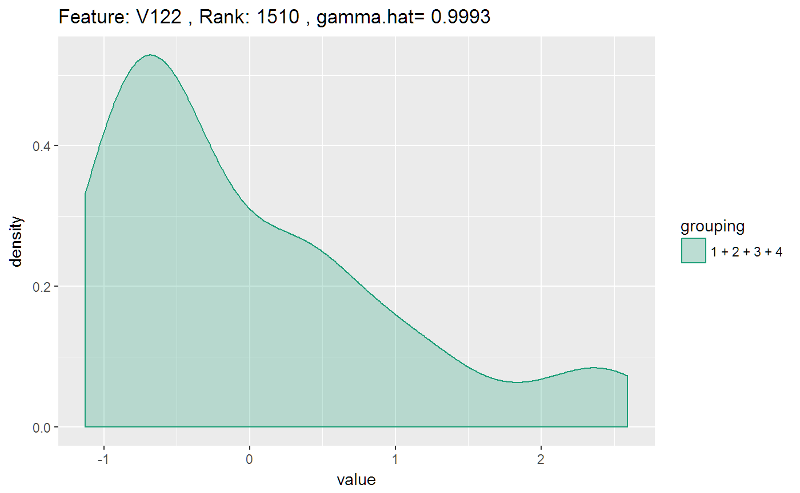

multiDAvignette.RmdHey, so you are interested in using the multiDA package for your analysis - awesome! Here are a few examples to get your work going. Loading the package using the library(multiDA) function, we can run a model on the inbuilt SRBCT data set as follows:
library(multiDA)
vy <- SRBCT$vy
mX <- SRBCT$mX
res <- multiDA(mX=mX, vy=vy, penalty="EBIC", equal.var=TRUE, set.options="exhaustive")If we want to predict class labels, we can use the `predict function in order to do so. In this case, we will find the resubstitution error rate for this dataset using the multiDA algorithm.
vals <- predict(res, newdata=mX)$vy.pred
rser <- sum(vals!=vy)/length(vy)
rser## [1] 0We can use the print command to look at a quick summary of the model fitted.
print(res)## Sample Size:
## [1] 63
## Number of Features:
## [1] 1586
## Classes:
## [1] 4
## Equal Variance Assumption:
## [1] TRUE
## Number of Significant Features:
## [1] 215
## Summary of Significant Features:
## rank feature.ID gamma.hat partition
## 1 1 V1172 0.9997741 8
## 2 2 V1232 0.9997576 4
## 3 3 V1233 0.9997563 3
## 4 4 V1324 0.9997506 3
## 5 5 V706 0.9997441 5
## 6 6 V434 0.9997437 3
## 7 7 V527 0.9997424 3
## 8 8 V1189 0.9997368 3
## 9 9 V1166 0.9997347 7
## 10 10 V148 0.9997342 4
## Partition Matrix:
## [1] "exhaustive"
## [,1] [,2] [,3] [,4] [,5] [,6] [,7] [,8] [,9] [,10] [,11] [,12] [,13]
## [1,] 1 1 1 1 1 1 1 1 1 1 1 1 1
## [2,] 1 1 1 2 2 2 1 2 2 1 2 2 2
## [3,] 1 2 1 1 2 2 2 1 3 2 1 3 2
## [4,] 1 1 2 1 2 1 2 2 1 3 3 2 3
## [,14] [,15]
## [1,] 1 1
## [2,] 2 2
## [3,] 3 3
## [4,] 3 4Further, we can plot the kernel density estimates of features we are interested in. By default, the plot function plots the top 10 ranked features. If `ranked=FALSE, then the user can specify which features to be plotted (specified by column names).
plot(res, ranks = 1)
An example using specified features
plot(res, ranked=FALSE, features = c("V22", "V122"))
a one row data frame, with quick summaries from the algorithm. In the spirit of the “glance” function from the broom package.
glimpse_multiDA(res)## Classes Number.of.Partitions Number.of.Signficant.Features Top.Gamma
## 1 4 15 1586 0.9997741This returns a tidy data frame, with key results from the trained multiDA object, namely, a data.frame of significant features and their ranks. In the spirit of “tidy” from the broom package.
tidy_res <- tidy_multiDA(res)
head(tidy_res)## rank feature.ID gamma.hat partition
## 1 1 V1172 0.9997741 8
## 2 2 V1232 0.9997576 4
## 3 3 V1233 0.9997563 3
## 4 4 V1324 0.9997506 3
## 5 5 V706 0.9997441 5
## 6 6 V434 0.9997437 3Returns a tidy data frame, returning back the original class, matrix of features, augmented with the paritioning of each feature as given by the algorithm. In the spirit of “augment” from the broom package.
augment_res <- augment_multiDA(res)
dim(augment_res) #twice as long!## [1] 63 3173